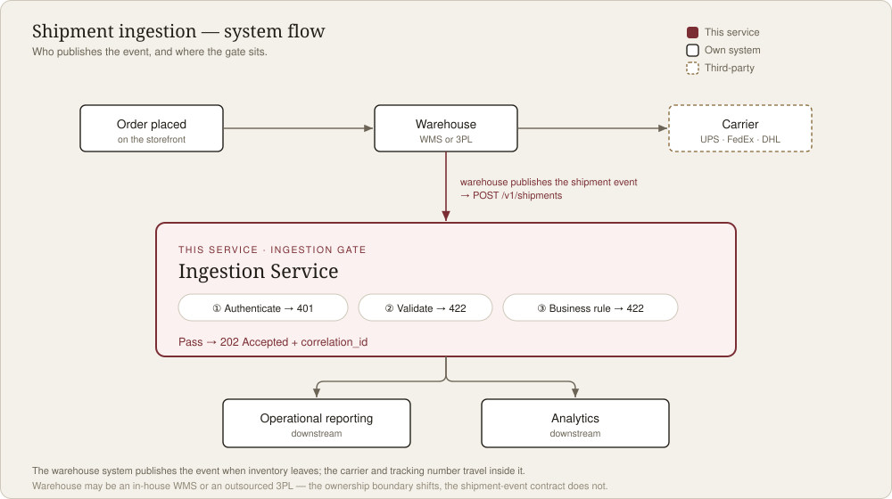

FastAPI · Data IntegrationFastAPI · 資料整合
A lightweight FastAPI service that ingests shipment events published by a warehouse system — it authenticates the caller, validates the payload, enforces a business rule, and forwards the clean event downstream for reporting and analytics. 一個小型的 FastAPI 服務。倉庫把貨出掉後會發出一筆「出貨事件」,這個服務負責接住它:先確認來源身分,再檢查資料對不對,套用一條商業規則,最後把乾淨的事件轉給下游做報表與分析。
The flow流程
POST /v1/shipments is the single entry point. Every request flows through the same pipeline:
只有一個進入點:POST /v1/shipments。每一筆請求都照順序走過這幾關:
X-API-Key header.確認身分:檢查 X-API-Key 這個 header。shipped event must carry a tracking number.套商業規則:狀態是 shipped 就一定要有追蹤號。202 Accepted and a correlation_id for tracing.回覆:回 202 Accepted,附一個 correlation_id 方便之後追。
Design decisions設計取捨
Structural checks (types, the status/carrier enums, quantity_shipped > 0, non-empty required strings) are enforced by Pydantic. The cross-field business rule — a shipped event must have a tracking number — lives separately in the endpoint. Both return 422 (well-formed but not processable in this state) and are told apart by the code, not the status: a 400 would wrongly suggest a malformed request. They stay in separate layers because they change for different reasons — structural rules follow the data format, business rules follow the business process — so a new business rule never disturbs the schema. Neither ever leaks out as an unexpected 500.
結構的檢查(型別、status/carrier 選項、quantity_shipped > 0、非空的必填欄位)交給 Pydantic。而「shipped 一定要有追蹤號」這種要看好幾個欄位、跟業務有關的規則,我放在 endpoint 自己處理。兩種都回 422(資料格式沒問題,只是這個狀態不能處理),靠 code 分辨、不靠狀態碼——因為回 400 會讓對方誤以為是格式壞掉。它們分在不同層,因為改的原因不一樣:結構跟著資料長相走,商業跟著業務規定走,加新商業規則不會動到資料結構。兩種也都不會不小心變成 500。
The API is consumed by machines, so every error returns the same shape — {"error": {"code", "message"}} (plus details for validation) — with a stable, machine-readable code. Callers write one error handler and branch on code rather than brittle string matching. FastAPI's default 422 is reshaped into this envelope so 401 / 422 stay consistent.
這個 API 是給程式打的,不是給人看的。所以每種錯誤都回一樣的結構——{"error": {"code", "message"}}(驗證錯的話再多一個 details),而且有一個固定、機器可讀的 code。這樣對方寫一套錯誤處理、看 code 判斷就好,不用去比對容易壞的字串。FastAPI 預設的 422 我也改成同一個樣子,讓錯誤一致。
The API key is read from the API_KEY environment variable and compared with secrets.compare_digest (constant-time, to avoid a timing attack). A missing header and an invalid key both return 401 with the same message, so the response never reveals which part failed.
API key 從 API_KEY 環境變數讀,用 secrets.compare_digest 比對(固定時間,避免被 timing attack 猜出來)。沒帶 header 跟帶錯 key 都回一樣的 401、訊息也一樣,不會透露到底是哪邊出錯。
Unknown fields are accepted rather than rejected, so upstream systems can evolve their schema without breaking ingestion. Accepted extras are logged as a schema-drift signal instead of being silently dropped. 對方多送了我沒定義的欄位時,我選擇收下、不擋掉,這樣上游改自己的格式時不會害我這邊壞掉。但我會把這些欄位寫進 log,當作「格式好像變了」的提醒,而不是默默丟掉。
Success returns 202 Accepted — the service accepts the event for downstream processing rather than creating a queryable resource — with the fulfillment_id for reconciliation and a generated correlation_id that also appears in the logs, so a single event can be traced end to end.
成功回 202 Accepted,意思是「我收下了、會往下游處理」,而不是「我建了一筆你可以再查的資料」。回覆帶 fulfillment_id 方便對帳,還有一個 correlation_id——這個 id 也會出現在 log 裡,所以一筆事件可以從頭追到尾。
API referenceAPI 參考
POST /v1/shipments
Header X-API-Key is required. The body is a nested JSON shipment event:
必帶 header X-API-Key。Body 是巢狀 JSON 的出貨事件:
Request body請求 body
{
"fulfillment_id": "FUL_99821",
"order_id": "ORD-12345",
"status": "shipped",
"shipped_at": "2026-01-01T10:30:00Z",
"tracking_number": "1Z999AA10123456784",
"carrier": "UPS",
"shipped_items": [
{ "order_item_id": "ITEM-10001", "sku": "BLUE-SHIRT-S", "quantity_shipped": 2 },
{ "order_item_id": "ITEM-10002", "sku": "RED-HAT-OS", "quantity_shipped": 1 }
]
}
Success · 202 Accepted成功 · 202 Accepted
{
"status": "accepted",
"fulfillment_id": "FUL_99821",
"correlation_id": "9f1c0b8e4d2a4f7e8b1c2d3e4f5a6b7c"
}
Errors — one envelope, told apart by code:錯誤 — 統一信封,靠 code 分辨:
X-API-Key missing or invalid.X-API-Key 沒帶或帶錯。details lists them).型別／欄位錯(details 會列出哪裡錯)。status = shipped but no tracking number.status = shipped 卻沒有追蹤號。Data quality資料品質
A shipment is an atomic fact — "this fulfillment shipped these items." If any part is invalid — say one shipped_items entry has an empty sku — the service does not silently accept a partial shipment (that would under-report what shipped and corrupt downstream analytics). The whole event is rejected and captured to a dead-letter (quarantine) sink with a reason, plus an alert — so the service stays up, the record is never lost, and it can be reviewed and replayed, rather than bounced back with a bare 422 nobody follows up on. Authentication runs first, so unauthenticated junk never reaches the sink.
一筆 shipment 是原子事實——「這次出貨 = 這些品項」。只要有一部分無效——例如某條 shipped_items 的 sku 是空的——服務不會默默收下半套(那會讓下游少算、對不上)。而是把整筆退回,並同時連同原因丟進 dead-letter(quarantine)、再發一則 alert——服務照活、資料不遺失、可回頭排查與重送,而不是回個沒人跟進的 422 就算了。而且先驗身分,沒授權的垃圾根本進不了 sink。
Request · one bad item請求 · 有一條壞 item
POST /v1/shipments // authenticated
{
"fulfillment_id": "FUL_99821", ...,
"shipped_items": [
{ "order_item_id": "ITEM-1", "sku": "BLUE-S", "quantity_shipped": 2 },
{ "order_item_id": "ITEM-2", "sku": "", "quantity_shipped": 1 }
] // ^ empty SKU
}
Response · 422 (whole event quarantined)回應 · 422(整筆已隔離)
{
"error": {
"code": "VALIDATION_ERROR",
"message": "Request payload failed validation.",
"details": [
{ "loc": ["body","shipped_items",1,"sku"],
"msg": "String should have at least 1 character" }
]
}
}
// side effect: whole event -> dead-letter sink + alert log
Accepting only the good line items would silently record an incomplete shipment — a data-correctness bug, which is exactly what this guards. Capturing the whole event (rather than crashing, or bouncing a bare error) keeps the reject reviewable and replayable and surfaces it via an alert. Stated assumptions (the brief was single-event): senders are systems, so a reject must be captured — not just returned; a shipment is atomic, so a bad part quarantines the whole; the dead-letter sink and alerting are mocked here (an in-memory list and a warning log), in the same spirit as the mocked downstream. 只收好的品項,等於默默記了一筆不完整的出貨——那本身就是資料錯誤,而這正是要防的。把整筆留痕(而不是讓程式崩、或只回個乾巴巴的錯)讓被拒的資料可回查、可重送,並用 alert 浮出來。明確假設(題目原本是單筆):送資料的是系統,所以被拒也要留痕、不能只回傳;shipment 是原子的,壞一部分就隔離整筆;dead-letter 與告警在這裡用 mock(記憶體清單 + warning log),跟「下游用 mock」同精神。
Live demo
This runs the exact same validation logic client-side — no server. Pick a scenario or edit the payload, then send. The demo API key is demo-secret-key.
這裡在瀏覽器裡跑跟後端一模一樣的驗證邏輯(沒有真的伺服器)。挑一個情境、或直接改 payload,再送出。demo 的 API key 是 demo-secret-key。
Run it locally本機執行
python -m venv .venv && source .venv/bin/activate pip install -r requirements-dev.txt export API_KEY=dev-local-key # or put it in .env uvicorn app.main:app --reload # interactive docs at /docs pytest # run the tests
Scope範圍
API_KEY; per-client keys are out of scope.只有一把 API key,用 API_KEY 提供;每個客戶一把先不做。1Z…) were left out.「有效」的追蹤號先當成非空字串;各家貨運商的格式(UPS 1Z…)先不管。status = shipped requires a tracking number; the carrier allowlist is fixed.只有 status = shipped 需要追蹤號;貨運商清單固定。shipped_at is accepted as any valid timestamp — not range-checked (past / future), and not required even when status = shipped.shipped_at 只要是合法時間就收——沒檢查是不是未來 / 太久以前,status = shipped 時也沒強制要填。Roughly in priority order — from data correctness to feeding the analytics warehouse.大致按優先順序——從資料正確性,到餵進分析倉儲。
202 (a crash loses nothing) and dedupe on fulfillment_id with a unique key (a re-send isn't counted twice). A hook already marks where dedup belongs.可靠性——不遺失、不重複。先把事件存起來再回 202(崩潰也不丟),並用 fulfillment_id 的唯一鍵去重(重送不會算兩次)。程式裡已先留了去重的位置。correlation_id downstream so one event can be traced across systems.可觀測性。對 schema drift 告警、追蹤指標(吞吐量、拒絕率、延遲),並把 correlation_id 帶到下游,讓一筆事件能跨系統追蹤。